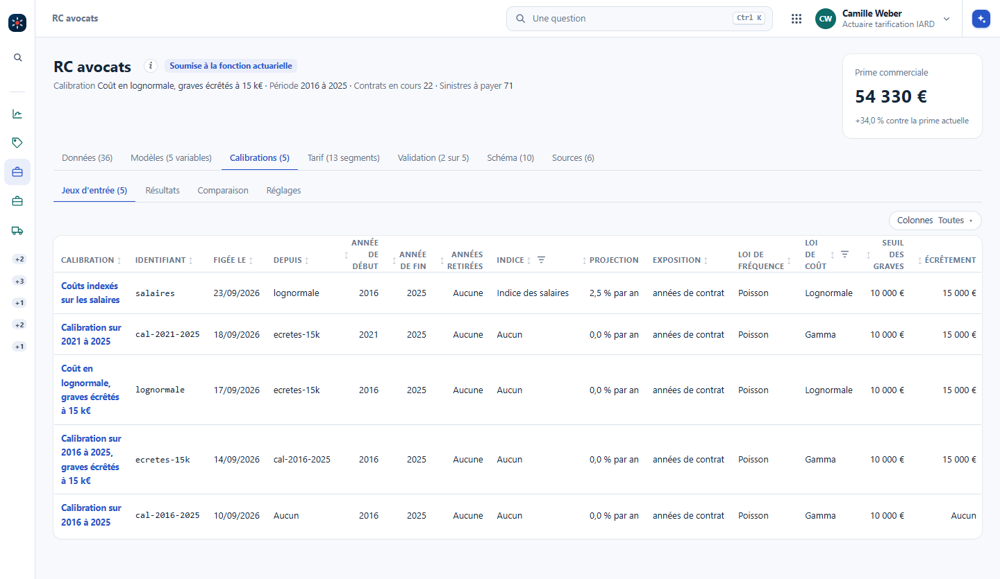
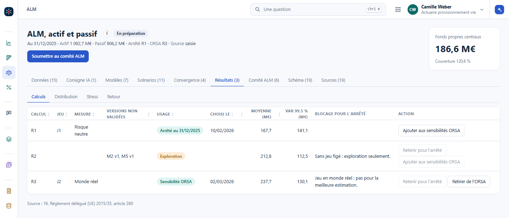
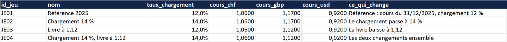
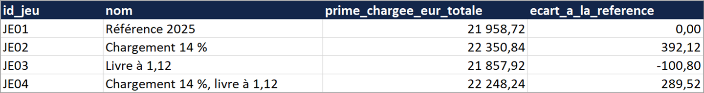

La traçabilité de tout se voit dans la plateforme. D'un point de vue données, ce n'est pas si compliqué : avoir en tête les entrées, et stocker les sorties en conséquence. Un jeu d'entrées donne des résultats. Le reste est une affaire de rangement, et c'est là que tout se perd.
tarif_auto_v3_final_VRAIMENT_final_inflation2_sans2020.xlsx
En non-vie, on met des suffixes et des préfixes aux fichiers Excel pour dire « je teste telle chose ». Ce nom porte trois entrées : une version, un indice d'inflation, une année retirée. Six mois plus tard, personne ne sait ce que voulait dire « inflation2 », ni laquelle des versions finales a servi. Au bout d'un moment, tout le monde est perdu, même la personne qui a nommé le fichier.
Structurer, c'est d'abord séparer les données d'entrée et les sorties. Dans les entrées d'une calibration, on précise chaque paramètre pris :
Versionner n'est pas simple, parce que c'est votre métier : il faut le connaître pour connaître toutes les entrées. Ce n'est pas un informaticien qui fera cette liste. Ensuite, on crée des tables dédiées, comme pour les versions de modèles du chapitre précédent, Versionner les résultats. Le calcul lui-même et le stockage de ses résultats sont au chapitre Calculer dans le back, stocker les résultats.
Si le programme est bien fait, un calcul se décrit par une ligne : un identifiant, un nom, et chaque paramètre en colonne.
On en crée une dizaine : la référence, puis chaque variante qu'on veut tester.
Même un petit changement de volatilité fait une nouvelle ligne. On copie la ligne et on change la valeur ; on n'écrit jamais « idem ».
Il lit la ligne, fait le calcul, et sort ses résultats.
Le résultat est stocké avec l'identifiant du jeu devant lui. Le résultat principal revient en colonne, sur la ligne du jeu.
C'est merveilleux, non ? C'est un travail d'ingénieur, fait une fois. Ensuite, ajouter un, dix, cent scénarios revient à appuyer sur un bouton. Et grâce à l'IA, il suffit de le dire : « crée une table des jeux d'entrées, une ligne par jeu, chaque paramètre en colonne ; stocke chaque résultat avec l'identifiant du jeu ».
La même forme dans chaque domaine : ce qui va sur la ligne du jeu, ce qui sort avec son identifiant, et où Vision le montre.
| Domaine | Le jeu d'entrées : une ligne, ces colonnes | Les résultats, avec l'identifiant du jeu | Dans Vision |
|---|---|---|---|
| Provisionnement non-vie | branche, arrêté, triangle des payés ou des survenus, années retirées, liens exclus, moyenne simple ou pondérée, années retenues, facteur de queue, méthode, S/P a priori | IBNR par année de survenance, total, erreur de Mack | #/modeles/prov-rc-auto, une version par arrêté ; les provisions par triangle dans #/provisions |
| Tarification GLM | période, variables, regroupements de modalités, exposition, lois, seuil des graves, indice d'inflation et sa projection | relativités, AIC, déviance, prime pure par segment | #/rc-avocats?ong=calibrations&cpart=jeux, une ligne par calibration |
| Inflation des sinistres | indice, année de référence, projection | sinistres revalorisés, coût moyen, prime | pas d'écran à part ; l'indice est une entrée de la calibration |
| Réassurance en excédent de sinistre | priorité, portée, reconstitutions, limite annuelle, jeu de scénarios, simulations, graine | prime pure par tranche, coût de réassurance, VaR de la rétention | #/modeles/cotation-moselle, versions et tirages ; #/modeles/reass-2027 |
| ALM | versions des modèles, jeu de scénarios figé, trajectoires, graine, horizon, stratégie | fonds propres moyens, VaR à 99,5 %, écart de duration, couverture | #/alm?ong=resultats&part=calculs, une ligne par calcul |
| IFRS 17 | flux, courbe, ajustement pour risque, unités de couverture, révision | CSM, perte, déroulé | #/ifrs17/temporaire-deces-2025 |
| Vie | table de mortalité, taux technique, chargements, loi de rachat | provision mathématique par contrat, total, écart à la version en usage | #/modeles/pm-vie |
« Et si je retire 2020 ? » ne se répond plus en renommant un fichier : on duplique la ligne du jeu, on retire l'année, et le moteur sort les nouveaux résultats à côté des anciens. Les postes de Vision : l'actuaire provisionnement IARD pour les provisions, l'actuaire tarification IARD pour la RC avocats et la cotation, l'actuaire provisionnement vie pour l'ALM et la vie, le responsable solvabilité et reporting pour IFRS 17. Les données sont fictives.


Dans Vision : #/rc-avocats?ong=calibrations&cpart=jeux au poste d'actuaire tarification IARD, puis l'onglet Résultats à côté ; #/alm?ong=resultats&part=calculs au poste d'actuaire provisionnement vie.
Le classeur d'exemple le fait sur sa prime chargée en euros. L'onglet Jeux d'entrée porte une ligne par jeu : un identifiant, un nom, le taux de chargement, le cours de chaque devise, et ce qui change. L'onglet Résultats porte une ligne par jeu et par contrat : l'identifiant du jeu, le contrat, le produit, l'indicateur, la valeur. L'onglet Synthèse croise les deux : une ligne par jeu, le total en colonne, et l'écart à la référence.


Ajouter un jeu, c'est ajouter une ligne dans Jeux d'entrée : les résultats suivent, avec son identifiant.
Le lien entre les anciens résultats et leurs entrées. Les résultats stockés avec l'identifiant du jeu disent maintenant 0,9 %, alors qu'ils ont été calculés avec 0,8 %. Un changement, même petit, fait une nouvelle ligne : on copie la ligne, on change la valeur, on donne un nom.
Parce que les résultats de tous les jeux se comparent alors dans une seule table : un filtre, un tableau croisé, et l'écart entre deux jeux se lit tout de suite. Un fichier par jeu oblige à les ouvrir un par un, et c'est le nom du fichier qui reprend le rôle de l'identifiant, avec les mêmes dérives.
L'actuaire. Savoir qu'un indice d'inflation a une projection et ses hypothèses, qu'une année se retire, que le seuil des graves change la prime pure, c'est le métier. L'IA écrit les tables et le moteur dès que la liste est dite ; elle ne la devine pas.